Full-stack developer at Patoliya Infotech, leading backend on an active product: API design, schema decisions, code review. The rest of the day is AI-native development — I write the spec, delegate the implementation to agents (Cursor, Claude Code, Codex), then read every merged diff like my name is on it. Because it is.
strong validation · correct failure modes · typed end to end · fast without shipping mess





| project | what it is | stack | |
|---|---|---|---|
| 01 | nirvitta | WhatsApp-first fashion commerce — conversational checkout instead of a cart, Payload CMS 3, migrations in the build | next · payload · neon · gsap |
| 02 | intervue-ai | multi-tenant AI interview SaaS — permission-checked MCP tools, audit trail, dual-model scoring | nest · prisma · mcp · bullmq |
frontend React · Next.js · Tailwind · shadcn/ui · GSAP · Framer Motion backend Node.js · Express · NestJS · REST · Socket.IO · RBAC data PostgreSQL · Prisma · Redis · MongoDB · Neon · Supabase


